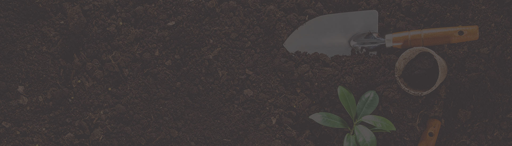
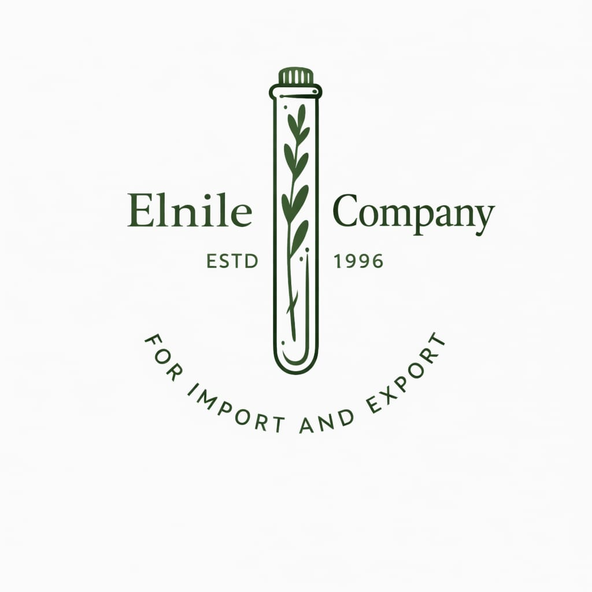

    <!-- End Navbar -->

    <style>
        .about-item p {
            color: white;
        }
    </style>


    <!-- Start page-top -->
    <section class="page-top">
        

        <div class="container">
            <div class="page-info">
                <h2 class="page-head">About Us</h2>
                <ul class="breadcrumb-con">
                    <li class="breadcrumb-m">
                        <a href="./Home.html">Home</a>
                    </li>
                    <li class="breadcrumb-m">/</li>
                    <li class="breadcrumb-m">About</li>
                </ul>
            </div>
        </div>
    </section>
    <!-- End page-top -->


    <section class="about-sec main-padding mt-4 position-relative">
        <div class="container">
            <div class="about-content">

                <div class="about-img wow fadeInRight">
                    
                </div>
                <div class="content">

                    <div class="d-flex align-items-center gap-3 mb-4">
                        <h4 class="main-title mb-0 wow fadeInDown">
                            About the Company
                            <span class="line"></span>
                        </h4>
                    </div>
                    <p class="text wow fadeInLeft mb-1">
                    <p>Deep Roots, Modern Vision
Our story began on March 31, 1996. Back then, our operations were humble, relying on manual sieves and a deep-rooted passion for Egypt’s rich botanical treasures. We didn’t just trade in herbs; we lived them.
Over the years, our ambition grew alongside our expertise. In 2013, we took a pivotal step, establishing The Nile Company as an independent entity with a renewed vision. What started as a local operation has transformed into a leading export powerhouse.
The Evolution of Quality
We believe that quality is a journey, not a destination. Our trajectory reflects this belief: transitioning from manual sorting to semi-automated lines, and finally, to fully automated excellence.
Today, we operate a massive 6,000 sqm facility equipped with three state-of-the-art Sortex production lines. This technological leap allows us to guarantee purity levels that meet the strictest European and international standards.
Why The Nile Company?
We are not just suppliers; we are your partners in quality.
Certified Excellence: We hold ISO 9001, ISO 22000, and Kosher certifications and are listed on the NFSA (National Food Safety Authority) White List. We are currently processing Organic, Halal, and SFDA registrations.
Capacity & Precision: Our advanced optical sorting technology ensures that whether it’s medicinal herbs, seeds, or pulses (like beans and sunflower seeds), the final product is pristine and ready for global markets.
Our Vision
To become a cornerstone in the global supply chain, recognized as one of Egypt’s top exporters to Europe and the world, setting the benchmark for purity and reliability.</p>

                    </p>
                    <div class="d-flex align-items-center gap-3 mt-4">
                        <a href="./Home/Products.html" class="main-btn up wow fadeInUp">Our Products</a>
                        <a href=" ./Images/040d1e0d30814821827fa2d95ebd27ac.jpeg" download="" target="_blank"
                            class="main-btn white wow fadeInUp">
                            Download Catalog
                            <i class="fa-solid fa-download"></i>
                        </a>
                    </div>
                </div>

            </div>
        </div>
    </section>


    